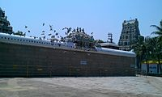

Marundeeswarar Temple is a temple dedicated to Hindu deity Shiva, located in Thiruvanmiyur, Chennai adjacent to the beach of Bay of Bengal. It is one of the 275 Paadal Petra Sthalams and no Navagraha where the three of the most revered Nayanars, Appar and Tirugnana Sambandar have glorified the temple with their verses during the 7th-8th century. The temple has been widely expanded by Chola kings during the 11th century. The temple has two seven tiered gateway towers, a huge tank, with the overall temple area covering 1 acre. The Marundeeswarar temple has been a place of curative worship for people with diseases. The latest consecration of the temple after renovation, was performed in May 2008. The temple is administered by the Hindu Religious and Endowment Board of the Government of Tamil Nadu.
The road starting from Marundeeswarar temple, now called ECR was an important route during the Chola period and was known as Vadagaperuvazhi, connecting the kingdom to places in Thanjavur and Andhra Pradesh. Inscriptions can be found in the shrine of Tripurasundari Amman dating back to the 11th century during the period of Rajendra Chola. The origins and antiquity of this temple is corroborated by the inscriptions found in other temples in the city namely Kapaleeswarar Temple, Virupaksheeswarar Temple and Thiruvidandai which bear testimony to Tiruvanmiyur's existence. A new life has been put into this ancient worshipping place, first in the year 1903 and then in the 1970s. This temple along with the Kapaleeswarar Temple and the Thiruvottiyur Thyagarajaswamy Temple form the famous Trinity Sea Shore temples of Thondai Mandalam.
Tiruvanmiyur, Chennai
